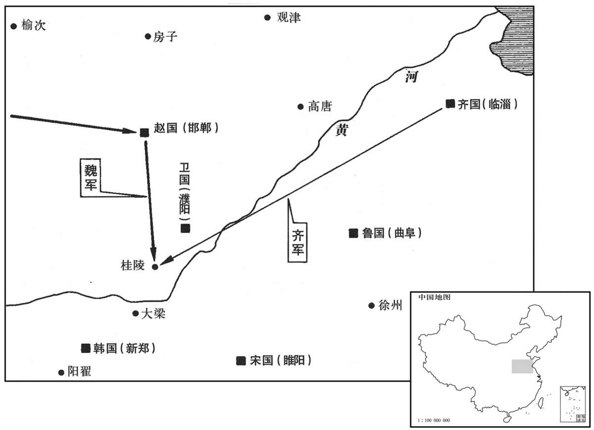
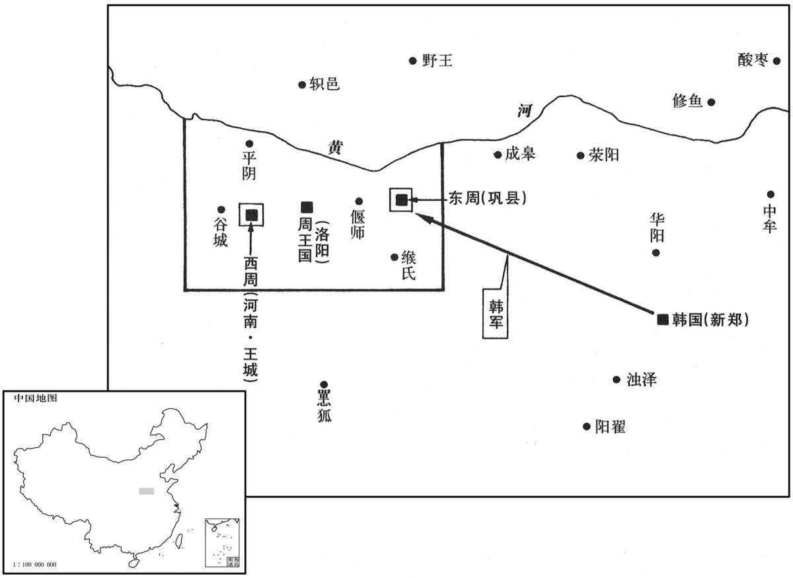

公元前353年资治通鉴：本年记事、原文与白话对照
按原书编年位置阅读；追叙和史论不等于本年发生的事件。白话采用所据译本，缺译不以生成译文补齐。
卷2 · 本年记事
公元前353年 · 显王在位第16年
十六年〔（戊辰、前三五三）〕
本年事件索引（现代整理）

本年形势与背景参考图

本年形势与背景参考图
齐威王使田忌救赵。
齐威王派田忌率军救赵。
初，孙膑与庞涓俱学兵法，〔姓谱：周文王子康叔封于卫，至武公子惠孙曾耳为卫上卿，因氏焉，后有孙武、孙膑，俱善兵。赵明诚金石录有汉安平相孙根碑云：先出自有殷之裔子，武王定周，封比干墓，胤裔分析，定曰孙焉。姓谱又曰：庞姓，毕公高之后，支庶封于庞，因氏焉。膑，频忍翻，刖刑也，去膝盖骨。郑玄曰：周改膑作刖，刖，断足也。书传云：决关梁、逾城郭而略盗者，其刑膑。孙膑盖以刖足故呼为膑。说文：膑，膝端也；类篇：毗宾切。庞，薄江翻。涓，古玄翻。〕庞涓仕魏为将军，〔将军之官，自周以来有之。〕自以能不及孙膑，乃召之；至，则以法断其两足而黥之，〔断，丁管翻。〕欲使终身废弃。齐使者至魏，孙膑以刑徒阴见，说齐使者，〔齐使，疏吏翻，说，式芮翻。〕齐使者窃载与之齐。〔之，往也。〕田忌善而客待之，进于威王。威王问兵法，遂以为师。于是威王谋救赵，以孙膑为将；辞以刑余之人不可，乃以田忌为将而孙子为师，居辎车中，坐为计谋。〔将，即亮翻。字林曰：軿车，有衣蔽、无后辕者谓之辎。释名曰：有邸曰辎，无邸曰軿。傅子曰：周曰辎车，即辇也。康曰：軿车也，军行所以载辎重。辎，楚持翻。軿，蒲眠翻。重，直用翻。〕
起初，孙膑与庞涓一起学兵法，庞涓在魏国做将军，自己估量才能不如孙膑，便召孙膑前来魏国，又设计依法砍断孙膑的双脚，在脸上刺字，想使他终身成为废人。齐国使者来到魏国，孙膑以受刑罪人身份与他暗中相见，说动了齐国使者，偷偷地把孙膑藏在车中回到齐国。齐国大臣田忌把他奉为座上客，又推荐给齐威王。威王向他请教了兵法，于是延请他为老师。这时齐威王计划出兵援救赵国，任命孙膑为大将，孙膑以自己是个残疾之人坚决辞谢，齐威王便以田忌为大将、孙膑为军师，让他坐在帘车里，出谋划策。
田忌欲引兵之赵。孙子曰：“夫解杂乱纷纠者不控拳，〔索隐曰：谓事之杂乱纷纠也。解杂乱纷纠者，当善以手解之，不可控拳而击之。余谓杂乱纷纠者，谓人斗者耳，非事也。康曰：拳，与絭同。絭者，攘臂绳也。余谓当从索隐说，康说非。夫，音扶。〕救斗者不搏撠，〔索隐曰：搏撠，音博戟，谓救斗者当善撝解之，毋以手相搏撠，则其怒益炽矣。按撠，谓以手持撠以刺人也。余谓索隐之说善矣，但以撠为持撠以刺人则非也。撠，如汉书“撠太后掖”之撠，师古曰：撠，谓拘持之也。毛晃曰：索持曰搏，拘持曰撠。〕批亢捣虚，形格势禁，则自为解耳。〔索隐曰：批，白结翻。亢，苦浪翻。按批者，相排批也，音白灭翻。亢，言敌人相亢拒也。捣者，击也，冲也。虚，空也。谓前人相亢，必须批之，彼兵若虚则冲捣之，若批其相亢，击捣彼虚，则是其形相格，其势自禁止，则彼自为解也。康曰：亢，极也，高也。捣，筑也。乘其高亢而批之，乘其虚而捣之，则其势自解。批亢捣虚，所谓形格势禁也。余谓索隐之说为长。盖斗者方相亢拒，则排批之使解；虚者，两敌距斗力所不及之处，捣之则虽欲斗，其势不能不解，此易见也。格，各额翻，格正也，又击也，斗也。吴都赋：“巢巢(果改禺)笑而被格”，本音如字，协韵音阁。巢(果改禺)，与狒同，音父沸翻。〕今梁、赵相攻，轻兵锐卒必竭于外，老弱疲于内；子不若引兵疾走魏都，据其街路，冲其方虚，〔康曰：虚，音墟。余谓虚，如字，冲其方虚，即上所谓“捣虚”也。索隐之说，义亦如此。走，则凑翻。〕彼必释赵以自救：是我一举解赵之围而收弊于魏也。”田忌从之。十月，邯郸降魏。〔邯，音寒。郸，音丹。降，户江翻。〕魏师还，与齐战于桂陵，魏师大败。〔还，从宣翻，又音如字。水经注：濮渠与酸水会，水东迳滑台城南，又东南迳瓦亭南，又东南会于濮。濮渠之侧有漆城。桂城亦曰桂陵，即田忌败魏师处。史记正义曰：桂陵在曹州乘氏县东南二十一里。濮，博木翻。〕
田忌准备率兵前往赵国，孙膑说：“排解两方的斗殴，不能用拳脚将他们打开，更不能上手扶持一方帮着打，只能因势利导，乘虚而入，紧张的形势受到阻禁，就自然化解了。现在两国攻战正酣，精兵锐卒倾巢而出，国中只剩老弱病残；您不如率军急袭魏国都城，占据交通要道，冲击他们空虚的后方，魏军一定会放弃攻赵回兵救援。这样我们一举两得，既解了赵国之围，又给魏国国内以打击。”田忌听从了孙膑的计策。十月，赵国的邯郸城投降了魏国。魏军又急忙还师援救国内，在桂陵与齐国军队发生激战，魏军大败。
本段人物：孙膑
韩伐东周，取陵观、廪丘。〔周室衰微，战国之时仅有七邑，汉时之河南、洛阳、谷成、平阴、偃师、巩、缑氏是也。晋志曰：周考王封周桓公孙惠公于巩，号东周，故战国有东、西周，芒山、首山其界也。陵观、廪丘皆当时邑聚之名，史无所考。廪丘，史记作“邢丘”。观，古玩翻。〕
韩国攻打东周王朝，夺取陵观、廪丘。
楚昭奚恤为相。江乙言于楚王曰：“人有爱其狗者，狗尝溺井，〔昭、屈、景，楚之强族，所谓“三闾”者也。太史公曰：嬴姓分封为江氏。相，息亮翻。溺，奴吊翻。〕其邻人见，欲入言之，狗当门而噬之。今昭奚恤常恶臣之见，亦犹是也。〔噬，时制翻。见，谓见楚王也。恶，乌路翻。〕且人有好扬人之善者，王曰：『此君子也』近之；好扬人之恶者，王曰：『此小人也，』远之。〔好，呼到翻。近者，附近之近，去声。远，于愿翻，推而远之。推，吐雷翻。〕然则且有子弑其父、臣弑其主者，而王终己不知也。〔己，音纪。终己，犹言终身也。〕何者？以王好闻人之美而恶闻人之恶也。”王曰：“善，寡人愿两闻之。”〔江乙欲毁昭奚恤，故先设是言。〕
楚国任用昭奚恤为国相。江乙对楚王说：“有个宠爱自己狗的人，狗向井里撒尿，邻居看见了，想到他家里去告诉他，却被狗堵住门咬。现在昭奚恤常常阻挠我来见您，就像恶狗堵门一样。况且一有专说别人好话的人，您就说：‘这是君子啊！’便亲近他；而对爱指出别人缺点的人，您总是说：‘这是个小人。’便疏远他。然而人世间有儿子杀父亲、臣下杀君主的恶人，您却始终不知道。为什么呢？原因在于您只爱听对别人的称颂，不爱听对别人的指责呀！”楚王听后说：“你说得对，今后我要听取两方面的言论。